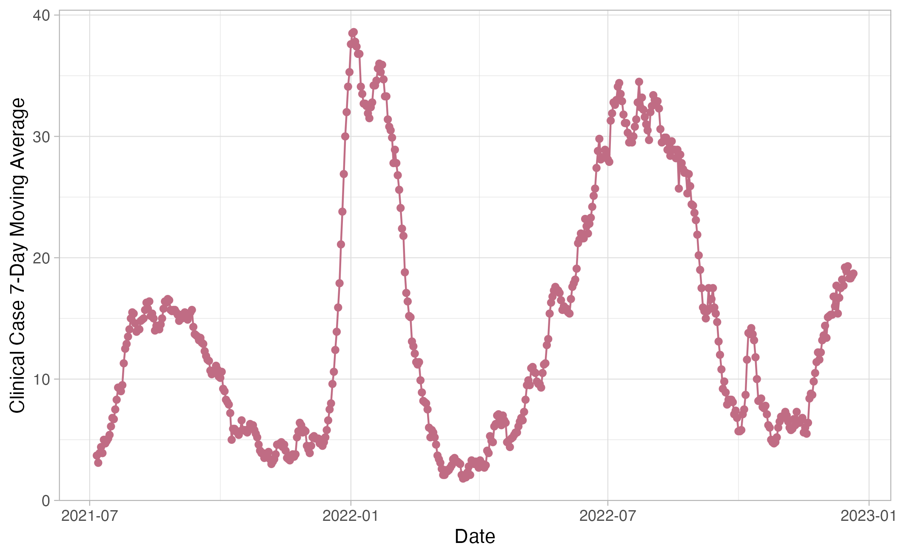

Data Analysis Project
1 Summary/Abstract
Write a summary of your project.
2 Introduction
2.1 General Background Information
Infection by Severe Acute Respiratory Syndrome Coronavirus 2 (SARS-CoV-2), causing COVID-19, is followed by the shedding of viral particles by multiple excretory functions, including stool and urine production. Subsequently, these viral particles can be detected in wastewater influent via RNA extraction, followed by Reverse Transcriptase Quantitative Polymerase Chain Reaction (RT-qPCR) utilizing SARS-CoV-2 specific primers. Wastewater-based detection methods have been utilized across the globe as an independent and parallel indicator of SARS-CoV-2 viral prevalence and, depending on community-specific factors, as a leading indicator of clinical case trends. WBE methods may also become a primary tool in understanding transmission dynamics as case under-reporting increases.
2.2 Description of data and data source
2.2.1 Wastewater SARS-CoV-2 surveillance data
24-hour composite wastewater samples were collected twice weekly from three treatment facilities in Clarke County and refrigerated until ready for extraction. RNA extractions were performed for each sample in replicates (n=6). Reverse Transcriptase Quantitative Polymerase Chain Reaction (RT-qPCR) and SARS-CoV-2 specific primer-probe pairs were used to amplify each RNA extraction replicate in technical replicates (n=3). The concentration per reaction of each gene target was determined by the amplification standard curve from positive controls corresponding to the targets.
Wastewater influent flow data, including total daily flow volume and total suspended solids rate, were collected for each corresponding sample date. This was used to estimate the viral load of SARS-CoV-2, also known as total daily copies.
2.2.2 COVID-19 testing data
COVID-19 data sets were downloaded from the Georgia Department of Public Health website (accessed Jan 2023), of which a subset was selected which includes symptom onset, PCR test, and PCR positive test data for each date since the first case was detected.
2.3 Questions/Hypotheses to be addressed
Is there a relationship between viral load and clinical case observations?
Is there a relationship between qPCR percent positive and clinical case observations?
What do viral load trends look like over time?
What do clinical case trends look like over time?
How do each of these temporal trends compare to one another over time?
3 Methods
3.1 Data acquisition
Wastewater SARS-CoV-2 viral load data was obtained through weekly surveillance efforts utilizing RT-qPCR methods (Section 2.2).
WWTP flow data was obtained through data share directly from plant representatives.
COVID-19 case data was downloaded from Georgia Department of Public Health’s COVID-19 Status Report Page in January 2023 [x].
3.2 Data import and cleaning
3.2.1 RT-qPCR data
For each target, viral copies per microliter (cp/uL) of each PCR reaction was estimated by transforming the cycle threshold value (Ct) using the appropriate standard curve equation. For reactions with no Ct value (no detection), cp/uL was set to the theoretical limit of detection (LOD). From this, N1 and N2 data frames were combined and copies per liter (cp/L) of sample for both targets was estimated using Equation 1.
Rows: 14,787
Columns: 8
$ date <date> 2021-07-06, 2021-07-06, 2021-07-06, 2021-07-06, …
$ facility <ord> C, C, C, C, C, C, C, C, C, C, C, C, C, C, C, C, C…
$ target <chr> "N1", "N1", "N1", "N1", "N1", "N1", "N1", "N1", "…
$ biological_replicate <chr> "A", "A", "A", "B", "B", "B", "C", "C", "C", "A",…
$ collection_num <dbl> 93, 93, 93, 93, 93, 93, 93, 93, 93, 93, 93, 93, 9…
$ ct <dbl> 37.21, 38.48, 36.16, NA, NA, 38.49, NA, NA, NA, N…
$ copy_num_uL_rxn <dbl> 0.4679393, 0.2043360, 0.9283227, 0.0040000, 0.004…
$ copy_num_L <dbl> 401090.861, 175145.119, 795705.184, 3428.571, 342…3.2.2 Treatment plant flow data
For each collection date, corresponding , were combined with the qPCR data. Viral load (total daily viral copies) was then estimated by multiplying concentration estimates by daily flow volume (Equation 2).
Rows: 798
Columns: 9
$ date <date> 2021-07-06, 2021-07-06, 2021-07-06, 2021-07-06, 202…
$ facility <ord> A, A, B, B, C, C, A, A, B, B, C, C, A, A, B, B, C, C…
$ target <chr> "N1", "N2", "N1", "N2", "N1", "N2", "N1", "N2", "N1"…
$ collection_num <dbl> 93, 93, 93, 93, 93, 93, 95, 95, 95, 95, 95, 95, 96, …
$ avg_copy_L <dbl> 24508.961, 3428.571, 44932.916, 3428.571, 173676.686…
$ avg_copy_uL_rxn <dbl> 0.02859379, 0.00400000, 0.05242174, 0.00400000, 0.20…
$ influent_flow_L <dbl> 18586372, 18586372, 10977694, 10977694, 7078720, 707…
$ influent_tss_mg_l <dbl> 187, 187, 272, 272, 96, 96, 260, 260, 82, 82, 236, 2…
$ total_copies <dbl> 4.555327e+11, 6.372470e+10, 4.932598e+11, 3.763781e+…3.2.3 COVID testing data
Data frames were combined into one and filtered to include only data pertaining to Clarke County. Proportion of positive tests per day was calculated by dividing PCR positive tests by total PCR tests.
Rows: 1,090
Columns: 8
$ date <date> 2020-02-01, 2020-02-02, 2020-02-03, 2020-02-04, 2…
$ cases.symptom.onset <dbl> 0, 0, 0, 0, 0, 0, 0, 0, 0, 1, 0, 0, 0, 0, 0, 0, 1,…
$ cases.reported <dbl> 0, 0, 0, 0, 0, 0, 0, 0, 0, 0, 0, 0, 0, 0, 0, 0, 0,…
$ pcr_tests <dbl> 0, 0, 0, 0, 0, 0, 0, 0, 0, 0, 0, 0, 0, 0, 0, 0, 0,…
$ pcr_pos <dbl> 0, 0, 0, 0, 0, 0, 0, 0, 0, 0, 0, 0, 0, 0, 0, 0, 0,…
$ pcr_pos_7dma <dbl> NA, NA, NA, NA, NA, NA, 0, 0, 0, 0, 0, 0, 0, 0, 0,…
$ pcr_pos_14dma <dbl> NA, NA, NA, NA, NA, NA, NA, NA, NA, NA, NA, NA, NA…
$ prop_pos <dbl> NaN, NaN, NaN, NaN, NaN, NaN, NaN, NaN, NaN, NaN, …3.3 Statistical analysis
3.3.1 Exploratory analysis
Wastewater and clinical data over time, linear regression model of wastewater vs clinical case data
3.3.2 Predicting clinical case levels with wastewater surveillance data
Wastewater data as predictor for clinical case outcomes
4 Results
4.1 Descriptive analysis




4.2 Basic statistical analysis

4.3 Full analysis
5 Discussion
5.1 Summary and Interpretation
Summarize what you did, what you found and what it means.
5.2 Strengths and Limitations
Discuss what you perceive as strengths and limitations of your analysis.
5.3 Conclusions
What are the main take-home messages?
Include citations in your Rmd file using bibtex, the list of references will automatically be placed at the end
This paper (Leek & Peng, 2015) discusses types of analyses.
These papers (McKay, Ebell, Billings, et al., 2020; McKay, Ebell, Dale, Shen, & Handel, 2020) are good examples of papers published using a fully reproducible setup similar to the one shown in this template.
Note that this cited reference will show up at the end of the document, the reference formatting is determined by the CSL file specified in the YAML header. Many more style files for almost any journal are available. You also specify the location of your bibtex reference file in the YAML. You can call your reference file anything you like, I just used the generic word references.bib but giving it a more descriptive name is probably better.